Translate
TranslateAccommodation and food and beverage stores and merchandise stores, will guide the necessary information to tourism such as traffic information, such as a bus or taxi.
- 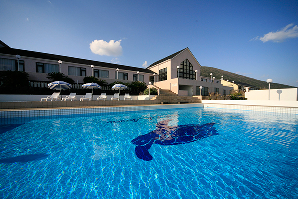
hotel
It will guide you through the accommodation of Hachijo Island.
- 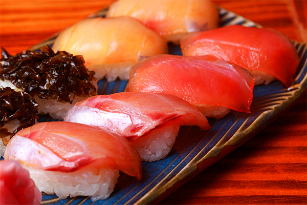
restaurant
It will guide you through the restaurant of Hachijo Island.
- 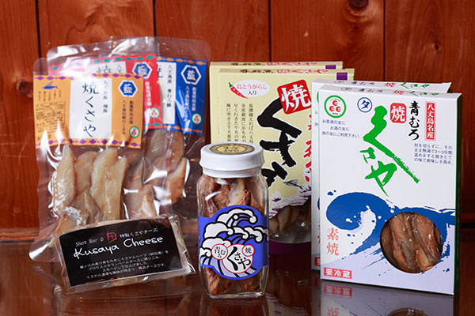
Merchandise shop
It will guide you through the merchandise shop of Hachijo Island.
- 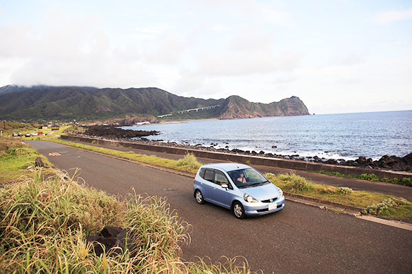
Hachijojima Transportation
It will guide you through the traffic of Hachijojima.
- 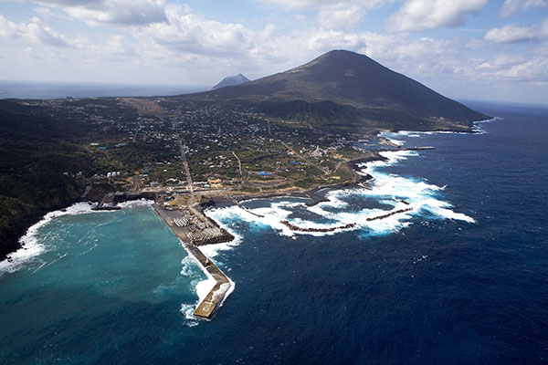
Guide service
It will guide you through the Hachijo of guide service facility.
-
relaxation
It will guide you through the relaxation facilities of Hachijo Island.

Tourist facilities
It will guide you through the tourist facilities of Hachijo Island.
- 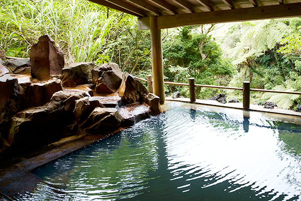
Municipal hot spring
It will guide you through the municipal hot springs of Hachijo Island.
-
ATM of guidance
It will guide you through the ATM installation location of Hachijo Island.
- 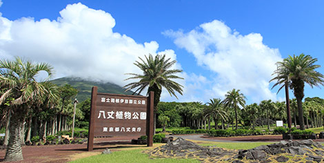
Okago area
Hachijojima Airport, Hachijo town hall, in the center of the island where there is such Hachijo Botanical Garden, is the area which is a tourist base. Restaurant and accommodation also has many scattered. Sunset appreciation of history walks and Hachijō-Kojima is also recommended.
- 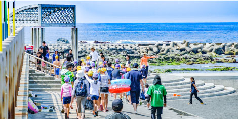
Mine (Mitsune) area
There is a subsoil (Sokodo) port where cruise ships arrive, immediately next to subsoil (Sokodo) beaches has become the only man-made sandy beach island, summer is crowded with a number of bathers. Okago side by side with many restaurants and accommodation area, is the area which is a tourist base.
- 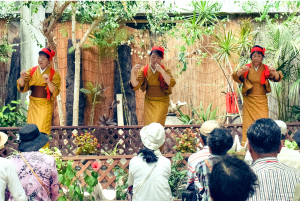
Kashitate area
First Sakagami district beyond the Osaka tunnel from Okago district of Sakashita is Kashitate. Hattori mansion and that Kashitate dance-Hachijo taiko Local entertainment is performances, short golf, Ionuma-Totaki of Mihara, hot springs and you can enjoy.
- 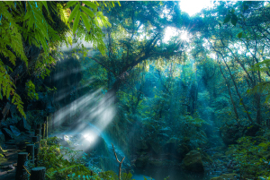
Nakanogo area
In rich district water resources of Mt. system such as a back saw months waterfall, it has sprung hot springs at four positions. Japan's three major pongee called Kihachijo of Meyu workshop, Eco-Agri Mart, Hachijo geothermal Museum, such as forest of Hego reminiscent of ancient Earth.
- 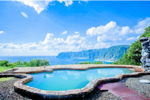
Sueyoshi area
In the hot water of TripAdvisor Onsen ranking view of the top finishers, from the open-air bath you can enjoy the starry sky appreciation of the day of superb view and night. Pot holes are large and small is that a variety of unusual potholes County, is recommended in the morning of a sunny day.